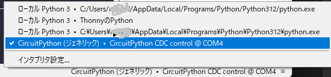

簡単ラズパイピコ入門
セットアップが終わったらraspberry pi picoはあなたのキーボード&マウスです。スタンプ連打、ゲームの単純自動操作など自由に使ってください。
これから作り方を解説していきます。
まずは,「thonny download」と検索してthonnyのサイトに入りましょう。
そしたらこのようなサイトに飛びます。ダウンロードをクリック
downloadをクリックしたらGitHubというサイトに飛びます。GitHubは便利なので機会があったら説明します。ちなみにこのサイトもGitHubを使用して公開しています。
そしたら下のほうのthonny-4.1.7.exe(このURLからも可)をクリックします。
そして左クリックx2でインストローラーを起動します。セットアップは特に難しいことはないので、解説はしませんが、デフォルトのままでOKです。最後にPythonかraspberry pi pico用か選ぶので、raspberry piを選んでください。
そしてthonnyを起動します。起動したら、右上のインタプリタ設定をクリックすることでMicoroPython(raspberry pi pico)から通常のPythonを使うこともできます。テーマを変えたりカスタマイズできます。
そして右下にあるMicroPython(Raspberry Pi Pico)のところをクリックしてCircuitPythonをインストールをクリックします。あとちょっとですよ。
自分のraspberry pi picoに合わせて設定しましょう。
そしてここにCircitPythonと書いてあったらOKです

できましたらファイルのCIRCUITPYのドライブを開いてこんなファイルがあったら成功です。
そしてキーボードやマウスとして機能させるためのライブラリという拡張機能を使います。circuitpython libraryと検索し赤で囲ってあるところをクリックしましょう。Livrary（このURLからも可）
そしてzipファイルを解凍して,hidと検索します。するとadafruit_hidというフォルダが出てきます。これをCIRCUITPYのlibというフォルダに入れます。そしたらインストール完了です。
コードを入力して緑の実行ボタンで実行します。するとraspberry pi picoがキーボードとして認識されます。これでキーボード&マウスの完成です。
ソースコード
import time
import board
from digitalio import DigitalInOut, Direction, Pull
import usb_hid
from adafruit_hid.mouse import Mouse
from adafruit_hid.keyboard import Keyboard
from adafruit_hid.keycode import Keycode
# 初期化
mouse = Mouse(usb_hid.devices)
keyboard = Keyboard(usb_hid.devices)
# マウスの移動を行う関数
def move_mouse(dx, dy):
mouse.move(x=dx, y=dy)
time.sleep(0.1)
# 左クリックを行う関数
def left_click():
mouse.click(Mouse.LEFT_BUTTON)
time.sleep(0.1)
# キーボード入力を行う関数
def send_key(key_code):
keyboard.press(key_code)
time.sleep(0.1)
keyboard.release_all()
# 'Hello World'を入力
def type_hello_world():
keyboard.write("Hello World")
time.sleep(2)
# メインループ
while True:
# マウスポインターを右に移動
move_mouse(10, 0)
time.sleep(1)
# 左クリック
left_click()
time.sleep(1)
# 'A'キーを押す
send_key(Keycode.A)
time.sleep(1)
# 'Hello World'を入力
type_hello_world()